Sesid Equator

While with the team at Galactic Contention, I was given the opportunity and the responsibility to create a sequel level to the already-loved Sesid level. This level had to fit in the broader scope of Galactic Contention, which is a total conversion mod for an FPS game called Squad. In it, 2 teams of 50 players each fight in a variety of game modes for control of a planet. As a level designer, I had to ensure that each of these game modes were offered support, whether or not they were planned to be featured at map launch. As a technical developer, I had to ensure that any necessary systems would work well, whether they were for gameplay or optimization.
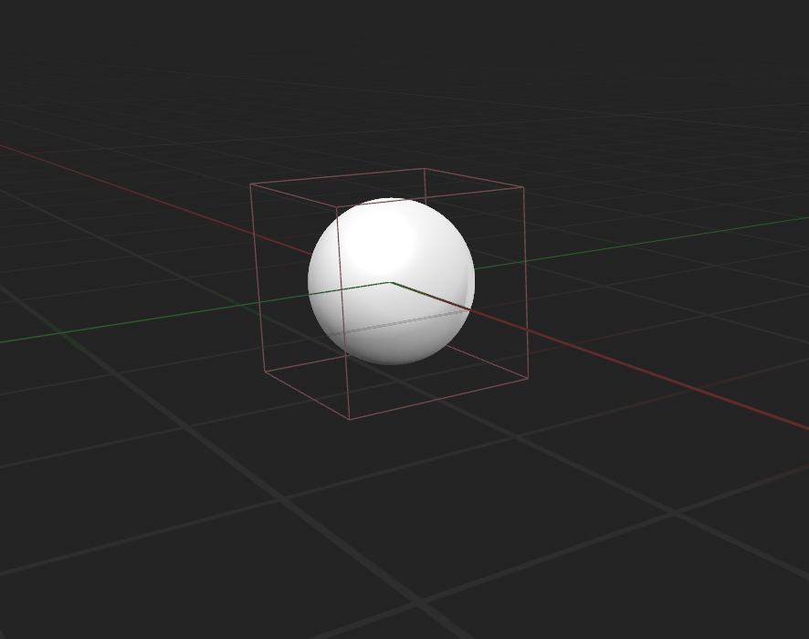For the level's swimming system, the implementation had to not touch any wider systems. So given that, I began planning for a single overlapping collision volume that would have all swimming logic contained within it. It would inherit from the SQUsable object, so that a player could also have an interact key to trigger an event, rather than having a constant sweep.
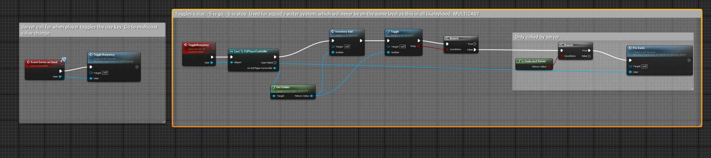The player interacting with the zone would cause the server to run an event, which would simply call a multicasted event in order to update the player's status. The two functions called here will be shown in a later screenshot. Finally, only the server will call another event which is only replicated on the server - it performs all the computations and passes the results to the client, so that the computations do not need to be run once for the server and once for each client.
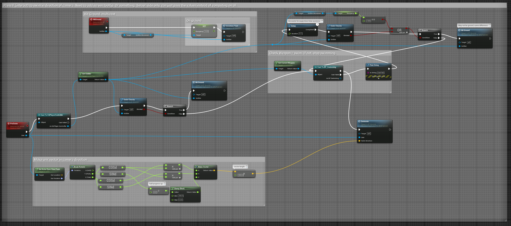This is where the server runs the computations for whether the player can swim or not, and how much force is applied in which direction. If the player hits the ground, or switches to a weapon, it also removes the swimming state from their inventory.
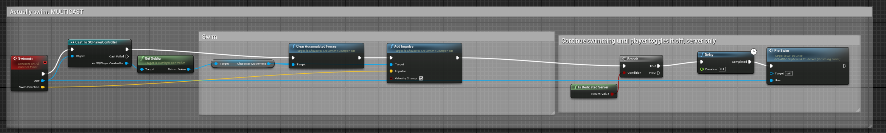Should the server confirm the player can, in fact, swim, the server will then pass the user and their swim direction vector to this event, which is run on all clients and the server. It will propel the player, and then the server will wait a short time before checking if the player can swim again, and potentially propelling them again.
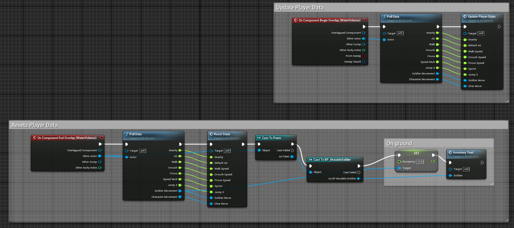Additionally, player movement characteristics are adjusted when entering the water. The player moves slower, has less effect from gravity, and other water-related effects. These are controlled by overlap start and end events.
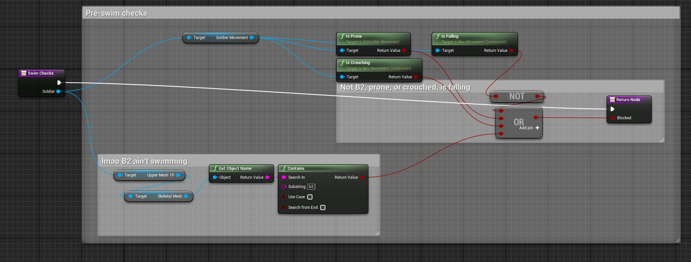The swim check function verifies that the player character is allowed to swim - it must not be prone, crouched, or touching the ground, and must not be a B2 (a very large and heavy droid made of solid metal, which is physically unable to swim).
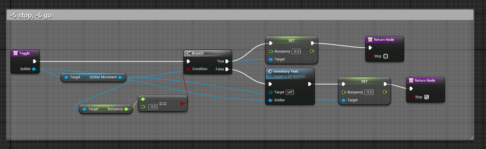I could not add data to a player, but I could manipulate existing data that would have no effect on the current level. So while I did not have access to a boolean flag, I could use an integer as one.
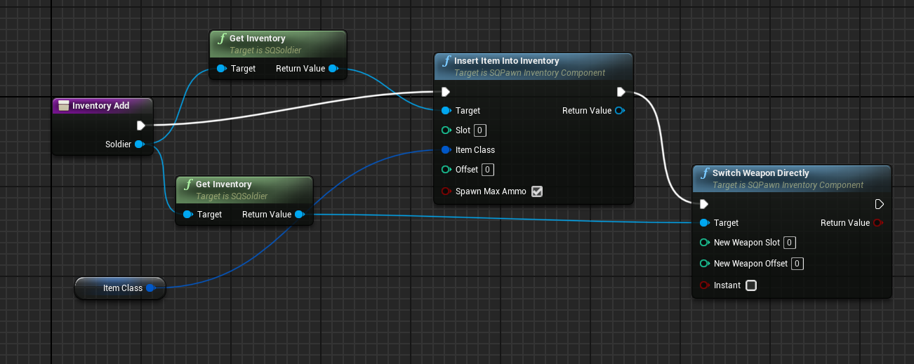In order to swim, the player is required to have a swimming 'weapon'. This is, in reality, an unarmed state that plays a swimming animation.
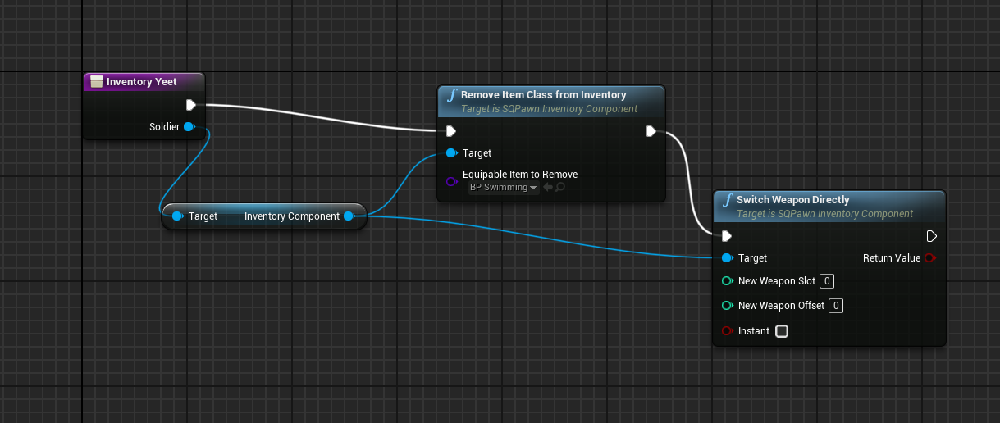However, when the player is done swimming, they should not have access to the swimming 'weapon', and so have it removed by this function.
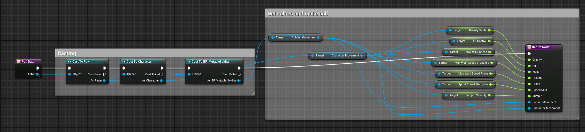I had to pull player data in a few places, so it made sense to refactor it into a function.
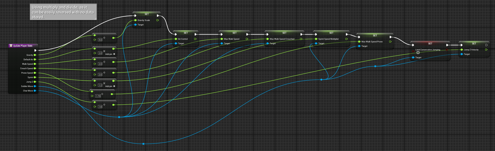This intakes the player data, and multiplies or divides the stats by a pre-determined integer. This prevents the need for data to be stored for each player, which would significantly increase the server's workload. The game supports 100 players, so the amount of data to store would swiftly snowball into a large quantity. By using multiply and divide, I can simply reverse the operation when the player leaves the water.
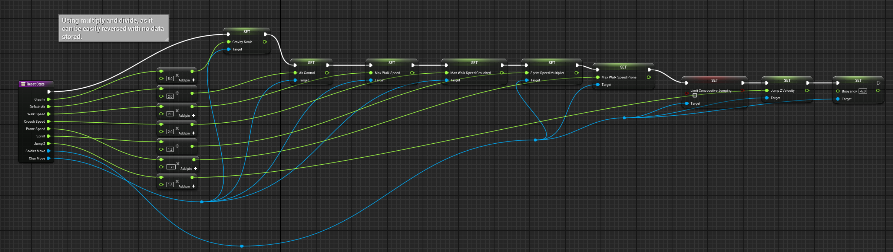Resets the player stats by using the opposite operation.
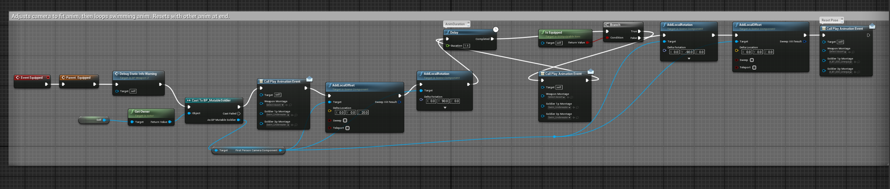The swimming 'weapon' also contains some logic, in order to play a swimming animation and appropriately adjust the player's camera. Due to where it is situated in the system, it has access to necessary systems that the overall blueprint lacks. However, the overall blueprint still controls whether or not the swimming 'weapon' is active on a player or not.